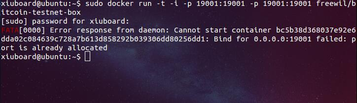

Ubuntu 下搭建比特币测试网络
最近想入门区块链开发，先学习一下比特币网络，用测试网络来熟悉比特币的运行机制，在虚拟机上安装 Ubuntu14.04 作为开发环境，分享一下环境配置的方法。
安装虚拟机 Ubuntu 和 Node.js
1、虚拟机和 Ubuntu 的安装可以参考：Vmware Workstation 安装 Ubuntu14.04；
2、安装完成后打开 Ubuntu，用 CTRL+ALT+T 组合键可以打开 Ubuntu 终端，以后的操作都要在终端下以命令的方式进行；熟悉一些常用的 Ubuntu 快捷键和命令再好不过了，不懂的用到时再查，用几次也就熟了；
3、Ubuntu14.04 默认带有 Node.js，查询是否安装 Node.js 和相应版本用如下命令：
npm 是随同 nodejs 一起安装的包管理工具，能解决 nodejs 代码部署上的很多问题，常见的使用场景有以下几种：
允许用户从 npm 服务器下载别人编写的第三方包到本地使用;
允许用户从 npm 服务器下载并安装别人编写的命令行程序到本地使用;
允许用户将自己编写的包或命令行程序上传到 npm 服务器供别人使用;
由于新版的 nodejs 已经集成了 npm，所以之前npm也一并安装好了。同样可以通过输入 “npm -v” 来测试是否成功安装。出现版本提示表示安装成功:
1 2 3
| apt-cache policy nodejs node -v npm -v
|
如果没有安装 Node.js，可以使用下面命令安装:
1 2 3
| sudo add-apt-repository 'deb https://deb.nodesource.com/node trusty main' sudo apt-get update sudo apt-get install nodejs
|
也可以用这种方法安装或者升级：Node.js 安装升级和 npm 使用;
安装相应的支持库和 Docker
1、这里使用的 RPC 支持库为 kapitalize，使用如下命令安装：
1 2
| npm install kapitalize 经测试 Ubuntu14.04 可以安装成功，高版本的 Ubuntu 会有其它问题产生。
|
2、安装 Docker 运行环境：
Docker 是一个开源应用容器引擎，详细信息可以参考：Docker 中文;
1 2 3 4 5 6 7
| sudo apt-get install docker.io 查看 Docker 版本： docker --version 如果查看版本时出现 Docker version xxx ,build xxxx ,说明已经安装成功。 创建软链接： sudo ln -sf /usr/bin/docker.io /usr/local/bin/docker
|
安装和运行比特币测试网络
1、下载比特币测试网络的 Docker 镜像：
1
| sudo docker pull freewil/bitcoin-testnet-box
|
2、运行 Docker 镜像：第一次运行时需要给模拟的两个节点配置 RPC 服务的端口，这里用 19001 和 19011 为例
1
| sudo docker run -t -i -p 19001:19001 -p 19001:19001 freewil/bitcoin-testnet-box
|
第二次运行时就不能再用同样的命令，不然就会报错：

这是因为第一次已经给它配置过这两个端口了，所以第二次使用下面命令就可以：
1
| sudo docker run -t -i freewil/bitcoin-testnet-box
|
出现 tester@b6afbc3ecf9c:~/bitcoin-testnet-box$ ，运行成功。
3、启动比特币测试网络命令：
make start
查看比特币网络中两个节点的信息命令：
make getinfo
1 2 3 4 5 6 7 8 9 10 11 12 13 14 15 16 17 18 19 20 21 22 23 24 25 26 27 28 29 30 31 32 33 34 35 36 37 38 39 40 41 42
| tester@b6afbc3ecf9c:~/bitcoin-testnet-box$ make start bitcoind -datadir=1 -daemon Bitcoin server starting bitcoind -datadir=2 -daemon Bitcoin server starting tester@b6afbc3ecf9c:~/bitcoin-testnet-box$ make getinfo bitcoin-cli -datadir=1 getinfo //钱包节点的信息 { "version": 130200, //客户端节点软件版本 "protocolversion": 70015, //比特币协议版本 "walletversion": 130000, //钱包数据格式版本 "balance": 0.00000000, //钱包节点的账户余额、初始是0 "blocks": 0, //已经产生的区块数量，初始启动测试网络是0 "timeoffset": 0, //时间的时区偏移量 "connections": 1, //本节点接入的其他节点数量 "proxy": "", //网络代理设置 "difficulty": 4.656542373906925e-10, //当前挖矿计算难度 "testnet": false, //是否使用外部比特币测试网络，false 即只建立私有测试网络 "keypoololdest": 1496239497, //预生成的公钥和私钥池的起始时间 "keypoolsize": 100, //预生成的公钥和私钥池的包含记录数量，用于生成钱包地址和找零地址，这样钱包备份可以对已有的交易以及未来多笔交易有效 "paytxfee": 0.00000000, //每次发送比特币时选择支付的交易手续费 "relayfee": 0.00001000, //每笔交易支付给矿工的最少的标准手续费 "errors": "" //错误提示 } bitcoin-cli -datadir=2 getinfo { "version": 130200, "protocolversion": 70015, "walletversion": 130000, "balance": 0.00000000, "blocks": 0, "timeoffset": 0, "connections": 1, "proxy": "", "difficulty": 4.656542373906925e-10, "testnet": false, "keypoololdest": 1496239497, "keypoolsize": 100, "paytxfee": 0.00000000, "relayfee": 0.00001000, "errors": "" }
|
以上都是用的是默认的参数，如需调整可以参照：Bitcoin.conf Configuration File
模拟测试比特币网络
1、模拟产生一个新的区块：
make generate
1 2 3 4 5 6 7 8 9 10 11 12 13 14 15 16 17 18 19 20 21 22 23 24 25 26 27 28 29 30 31 32 33 34 35 36 37 38 39 40 41 42
| tester@b6afbc3ecf9c:~/bitcoin-testnet-box$ make generate bitcoin-cli -datadir=1 generate 1 [ "13b044fbeef3283d9a3a5e79a86c8abc696c9fafdecdb2f68d72db76396187e2" ] tester@b6afbc3ecf9c:~/bitcoin-testnet-box$ make getinfo bitcoin-cli -datadir=1 getinfo { "version": 130200, "protocolversion": 70015, "walletversion": 130000, "balance": 0.00000000, "blocks": 1, "timeoffset": 0, "connections": 1, "proxy": "", "difficulty": 4.656542373906925e-10, "testnet": false, "keypoololdest": 1496239497, "keypoolsize": 100, "paytxfee": 0.00000000, "relayfee": 0.00001000, "errors": "" } bitcoin-cli -datadir=2 getinfo { "version": 130200, "protocolversion": 70015, "walletversion": 130000, "balance": 0.00000000, "blocks": 1, "timeoffset": 0, "connections": 1, "proxy": "", "difficulty": 4.656542373906925e-10, "testnet": false, "keypoololdest": 1496239497, "keypoolsize": 100, "paytxfee": 0.00000000, "relayfee": 0.00001000, "errors": "" }
|
可以看到区块数变成 1 了，但是账户余额还是 0，因为需要 6 次确认（但是这里有个疑问，第一次必须模拟产生 100 个区块后第一笔奖励才到账）
所以再模拟产生 100 个区块
make generate BLOCKS=100 //BLOCKS 大写，注意所有命令都是区分大小写的
1 2 3 4 5 6 7 8 9 10 11 12 13 14 15 16 17 18 19 20 21 22 23 24 25 26 27 28 29 30 31 32 33 34 35 36 37
| tester@b6afbc3ecf9c:~/bitcoin-testnet-box$ make getinfo bitcoin-cli -datadir=1 getinfo { "version": 130200, "protocolversion": 70015, "walletversion": 130000, "balance": 50.00000000, "blocks": 101, "timeoffset": 0, "connections": 1, "proxy": "", "difficulty": 4.656542373906925e-10, "testnet": false, "keypoololdest": 1496239498, "keypoolsize": 100, "paytxfee": 0.00000000, "relayfee": 0.00001000, "errors": "" } bitcoin-cli -datadir=2 getinfo { "version": 130200, "protocolversion": 70015, "walletversion": 130000, "balance": 0.00000000, "blocks": 101, "timeoffset": 0, "connections": 1, "proxy": "", "difficulty": 4.656542373906925e-10, "testnet": false, "keypoololdest": 1496239497, "keypoolsize": 100, "paytxfee": 0.00000000, "relayfee": 0.00001000, "errors": "" }
|
可以看到我获得了第一笔挖矿奖励，50 个比特币，”balance”: 50.00000000
2、模拟给测试钱包地址转账 10 个比特币
make sendfrom1 ADDRESS=mgqWZJm3GgMEcv4D2M48B7KZN4HN9k9VxL AMOUNT=10
这里的地址是比特币测试网络地址，以 m 开头，与正式网络地址(以 1 或 3 开头)是有区别的。
1 2 3
| tester@ad7790019d5c:~/bitcoin-testnet-box$ make sendfrom1 ADDRESS=mgqWZJm3GgMEcv4D2M48B7KZN4HN9k9VxL AMOUNT=10 bitcoin-cli -datadir=1 sendtoaddress mgqWZJm3GgMEcv4D2M48B7KZN4HN9k9VxL 10 799253e654f203e72e7d01b49b9a180d14c2a4c64d439832335f0802ff6fbef2
|
3、模拟产生 10 个新区块，让这次的转账得到确认：
make generate BLOCKS=10
然后用 make getinfo 命令查看最新账户信息，发现余额变成了 539.99996180,这是新产生 10 个区块的奖励 500+余额40，缺少的那极少部分比特币是转账时的矿工费用。
1 2 3 4 5 6 7 8 9 10 11 12 13 14 15 16 17 18 19 20 21 22 23 24 25 26 27 28 29 30 31 32 33 34 35 36 37 38 39 40 41 42 43 44 45 46 47 48 49 50 51
| tester@38aed90659b3:~/bitcoin-testnet-box$ make generate BLOCKS=10 bitcoin-cli -datadir=1 generate 10 [ "6fd144ed0e9623cb1e7b7d82d7d7a7235a2b1d9ac8b4bc7e4f94b2f77f5ee1ea", "290067cd1999abd34b6f1cacf0629031325ec74f68694b7bd680427a6ba602a7", "471775273b2fc710a0467ac3e09aaaccdc3d948ab3d8e553583147a50ab8b94a", "42e14da947f33c29cb7b2486a483766461535c65c5b65819e3d70df4f9ebf528", "24de084e3cc57e6b3e642a7594779b95c1c5b1cc6dfd7f714267dcfa164d6654", "151a98b2ddb2c54f93e93a31f65081e9d2c940a5f3d93dc38422902f879a8113", "7ac48803ac7fd516da62f280f28e6f5aa069f296bfc80572bba2788c89158439", "1afabb230e3a2cb1a44d8ec8ae639cf5dd8d281a0f38ba34cbf25569c76a88cd", "3288ea188c70cf8b33e44fea32de78f2c263c59048d526ee042953b5138eb884", "020f9c596bde152c161bd7c0b30c3980f06591e4171f50e88bab303cea72911e" ] tester@38aed90659b3:~/bitcoin-testnet-box$ make getinfo bitcoin-cli -datadir=1 getinfo { "version": 130200, "protocolversion": 70015, "walletversion": 130000, "balance": 539.99996180, "blocks": 111, "timeoffset": 0, "connections": 1, "proxy": "", "difficulty": 4.656542373906925e-10, "testnet": false, "keypoololdest": 1496417999, "keypoolsize": 100, "paytxfee": 0.00000000, "relayfee": 0.00001000, "errors": "" } bitcoin-cli -datadir=2 getinfo { "version": 130200, "protocolversion": 70015, "walletversion": 130000, "balance": 0.00000000, "blocks": 111, "timeoffset": 0, "connections": 1, "proxy": "", "difficulty": 4.656542373906925e-10, "testnet": false, "keypoololdest": 1496417999, "keypoolsize": 100, "paytxfee": 0.00000000, "relayfee": 0.00001000, "errors": "" }
|
到这里比特币测试网络的搭建运行和基本的操作已经测试完成了，可以进行之后的基础开发工作了。
如有疑问或不对的地方欢迎联系和指正！